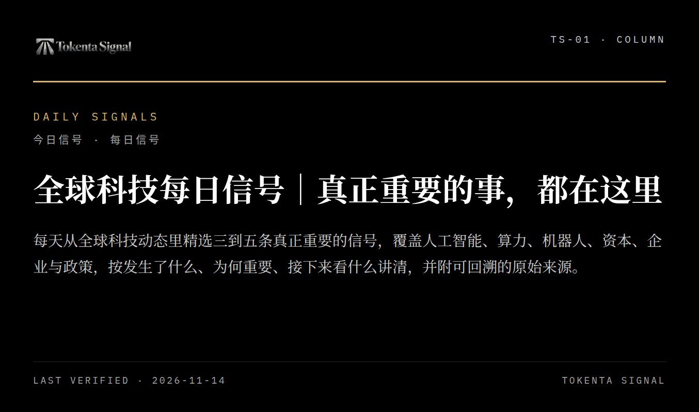
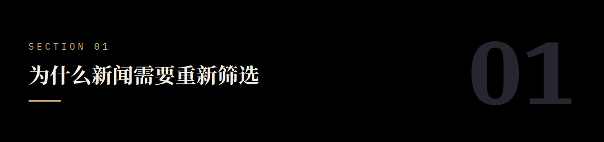
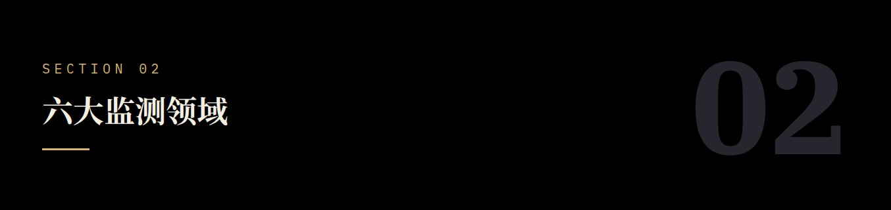
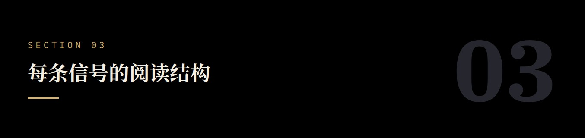
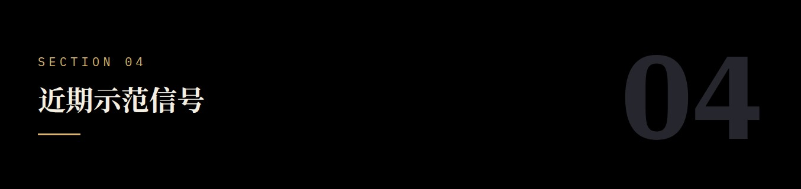
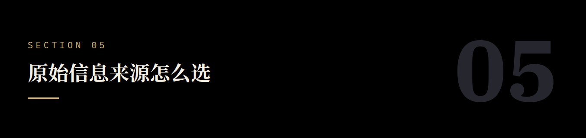
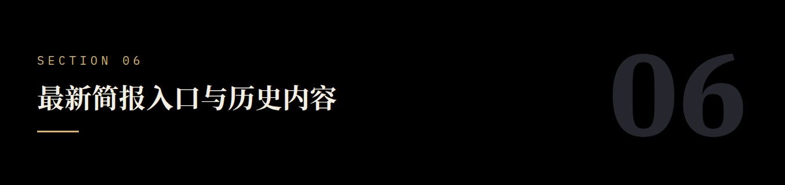

每天早上打开手机，科技新闻已经堆了几十条。模型发布、融资官宣、财报数字、政策表态混在一起，标题一个比一个大，真正会影响产品、公司和行业走向的，往往只有少数几条。每日信号要解决的，就是这一步筛选。
Tokenta Daily Signals 是今日信号主菜单的日常入口。它从全球公开信息里挑出值得占用注意力的变化，用中文讲清事实、影响和后续观察点，并把原始来源摆在同一页。读者不需要先读完十几篇英文报道，再自己判断哪条重要。

信息过载的问题出在重要性被平均化。一条改变默认入口的模型更新，和一条常规的营销发布，在信息流里占的位置一样大。只看标题和热度，很容易把注意力花在声音最大的事件上，漏掉那些短期安静、长期影响定价和竞争格局的变化。
筛选的标准只有三条。第一，是否改变了能力边界、成本结构或竞争位置。第二，是否有可核验的一手来源支撑，转述和猜测不算数。第三，是否留下了明确的后续节点，比如生效日期、交付时间、表决结果或财报验证。达不到这三条的动态，宁可不收。
每日信号每天精选三到五条，宁缺毋滥。没有足够重要的变化时，简报会缩短，旧闻、二手盘点和未经证实的传闻一律不用来补位。读者看到的每一条，都应当值得转发给同事，并附上一句自己的判断。

每日信号固定盯住六个领域。人工智能看模型能力、智能体产品和研究突破。算力看芯片、数据中心、能源和云基础设施。机器人看本体、具身智能和真实场景部署。资本看融资、并购、上市和大公司的资本开支。企业看组织调整、产品策略和管理层变化。科技政策看立法、监管、出口管制和平台规则。六个领域彼此连着，一条算力新闻常常同时是资本新闻，一项政策变化也会改写企业的产品路线。
这种分法的好处是强迫编辑做取舍。同一天里如果只有模型新闻，就不能用五条同类动态凑满一期。编辑必须回到六个领域里再扫一遍，确认机器人、政策或资本侧有没有被英文报道淹没的重要变化。长期看，读者得到的是一张相对完整的产业地图，单一赛道的热闹只占其中一小块。

每条信号固定写三段。第一段只写发生了什么，给出时间、主体和可核验的事实，数字要标明是融资、估值、营收还是资本开支，不能混用。第二段写为什么重要，说明它改变了谁的成本、谁的入口、谁的议价能力，或者哪条技术路线被验证。第三段写接下来看什么，列出最近的验证点，比如正式上线日期、监管表决、财报电话会或同类公司的跟进动作。
三段结构看起来简单，作用是把事实和判断分开。读者可以只认第一段的事实，不认第二段的判断，也可以用第三段的观察点去检验编辑的判断对不对。判断写错了，后续简报会明确修正，不会悄悄改口。下面的五张卡片就是按这个结构压缩出来的示范，完整版会在每日简报里展开。

下面五条选自本公众号在2026年11月12日至13日已经核验并成稿的事件，分别落在企业、人工智能、资本和智能体应用上。它们在这里只承担一个用途，说明入选门槛长什么样。共同点是都有官方一手页面可回溯，且都留下了清晰的后续观察点。
英伟达首席执行官交接，克雷斯出任临时首席执行官
事件 英伟达宣布管理层交接
日期 2026-11-12
来源 英伟达投资者关系新闻稿
关键变化 黄仁勋即刻辞去总裁、首席执行官与董事职务，首席财务官科莱特·克雷斯出任临时首席执行官，董事会已启动永久接班人选聘
重要性 领导全球算力供给的核心公司在33年后首次换帅，接班人选将影响产品路线、资本配置与供应链谈判，后续看董事会选聘结果与新任管理层的首次公开表态
交接事实以英伟达官方新闻稿为准，素材为本公众号 Issue 233 已核验成稿。
谷歌发布 Gemini 4 Hydrogen，搜索迎来最大模型升级
事件 谷歌发布新模型并升级搜索
日期 2026-11-12
来源 谷歌官方博客 The Keyword
关键变化 Gemini 4 Hydrogen 当日全球上线，覆盖 Gemini 应用、搜索、Gemini API、AI Studio 与 Antigravity，，谷歌称其为搜索迄今最大的模型升级，面向所有用户推出，每百万输入 token 定价1.50美元
重要性 默认入口的模型更换会影响海量用户的日常查询体验，也会抬高其他厂商在速度与成本上的竞争门槛，后续看开发者调用价格与实际响应质量是否稳定
定价与上线范围以谷歌官方博客为准，素材为本公众号 Issue 222 已核验成稿。
LangChain 完成3亿美元C轮融资，估值30亿美元
事件 LangChain 宣布新一轮融资
日期 2026-11-13
来源 LangChain 官方博客
关键变化 完成3亿美元C轮融资，估值30亿美元，由 CapitalG 领投，资金投向 LangSmith 平台
重要性 资金性质为股权融资，估值约为一年前B轮的2.4倍，显示资本正从模型层向智能体开发与治理工具层集中，后续看 LangSmith 的企业客户增长与治理功能落地
融资额与估值以官方博客口径为准，文中已区分融资额与估值两个口径，素材为本公众号 Issue 231 已核验成稿。
OpenAI 推出 ChatGPT 钱包，智能体可代付
事件 OpenAI 推出面向智能体的支付钱包
日期 2026-11-13
来源 OpenAI 官方博客
关键变化 智能体可在用户核验后代为下单，真实卡号对商户和智能体均不可见，首批仅面向美国 Pro 订阅者
重要性 支付是智能体从给出建议走向执行交易的关键一环，卡号隔离的设计决定了这类产品能否被用户信任，后续看开放地区、商户覆盖与争议处理规则
开放范围以官方博客为准，中国大陆不在首批范围内，素材为本公众号 Issue 229 已核验成稿。
DeepSeek 将应用能力整套开放为 API
事件 DeepSeek 开放应用层工具 API
日期 2026-11-13
来源 DeepSeek 官方新闻页，2026-11-13 发布《DeepSeek 发布全家桶应用 API》
关键变化 搜索、读链接、文件解析与安全检查等消费级应用背后的能力可通过 API 调用，按次单独计费
重要性 模型厂商把应用层能力拆成接口出售，会降低中小开发者的集成成本，也让工具调用的竞争从模型本身扩展到配套服务，后续看计费细则与调用稳定性
功能清单以 DeepSeek 官方新闻页为准，素材为本公众号 Issue 230 已核验成稿。

每日信号的来源排序很明确。公司官方博客、官方文档、投资者关系页面和监管文件排在最前，其次是通讯社和有署名的行业媒体，聚合站和社交平台只作线索，不作事实依据。同一事件有多个口径时，正文优先采用官方口径，媒体报道的数字会明确标注为媒体报道，不写成公司确认。
推荐长期跟踪的原始来源包括各实验室与平台的官方发布页、芯片与云厂商的投资者关系页、主要交易所与监管机构的公告页，以及本公众号在每条信号末尾附出的原文链接。读者顺着链接回到原文，可以看到完整的上下文，也能发现中文简报为了篇幅删去了哪些细节。

最新一期每日信号从公众号主菜单今日信号进入，点每日信号即可到达本栏目入口，入口页会说明当期简报的承接位置。历史简报按日期沉淀在公众号的历史消息里，可用公众号内的搜索按公司名、模型名或事件关键词回查。菜单跳转需要 Instinct 在后台指向本篇正式链接后才算完成配置，配置前不在文中填充任何临时链接。
阅读节奏建议很简单。时间紧时只看每条信号的第一段和观察点，五分钟内能扫完。遇到与自己工作、投资或研究直接相关的条目，再点开原始来源读全文。周末的一周必读会把当周信号重新排序，适合错过工作日简报的读者一次补齐。

01 从主菜单今日信号进入每日信号，先看栏目入口了解筛选标准，再读当期简报。
02 每条信号先读发生了什么，再读为什么重要，时间紧时可直接跳到接下来看什么。
03 需要核对数字时，点卡片与文末的官方来源链接回原文确认口径，媒体报道数字与公司确认数字分开看。
04 历史简报用公众号内搜索按公司名、模型名或事件关键词回查，周末可通过一周必读一次补齐。

SOURCES · 来源与核验
[1] 英伟达投资者关系，首席执行官交接新闻稿，2026-11-12
[2] 谷歌官方博客，Gemini 4 Hydrogen 发布说明，2026-11-12
[3] LangChain 官方博客，C轮融资公告，2026-11-13
[4] OpenAI 官方博客，ChatGPT 钱包发布说明，2026-11-13
[5] DeepSeek 官方新闻页，《DeepSeek 发布全家桶应用 API》，2026-11-13
LAST VERIFIED · 2026-11-14
TOKENTA SIGNAL
Extracting signals from the noise. 本栏目内容来自公开来源并标注核验日期，不构成任何投资建议。
signal.tokenta.space · team@tokenta.space